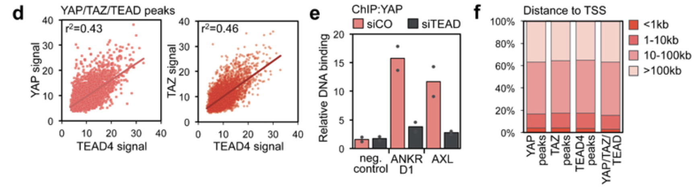
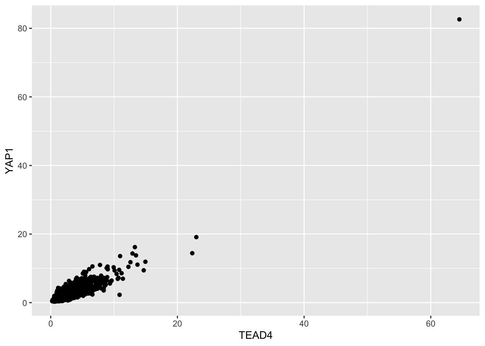
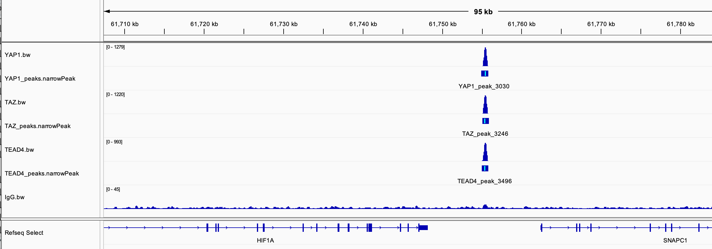
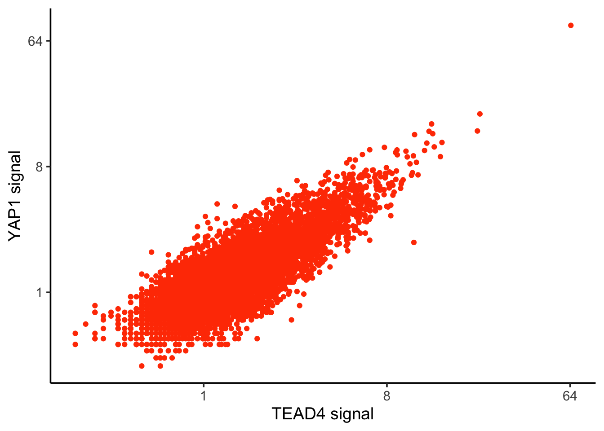
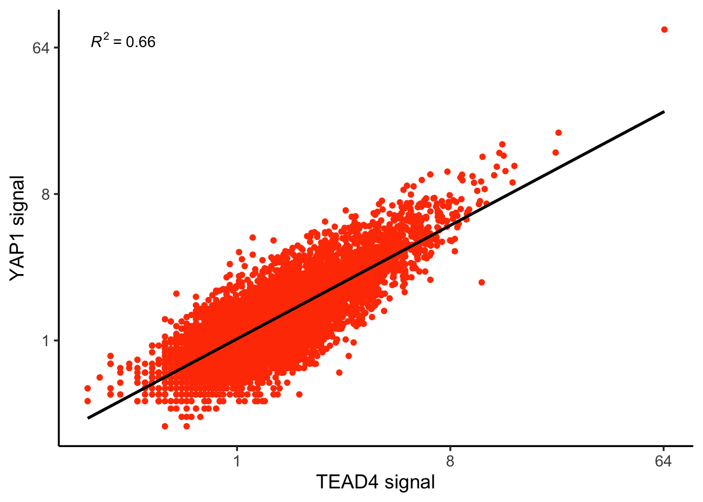
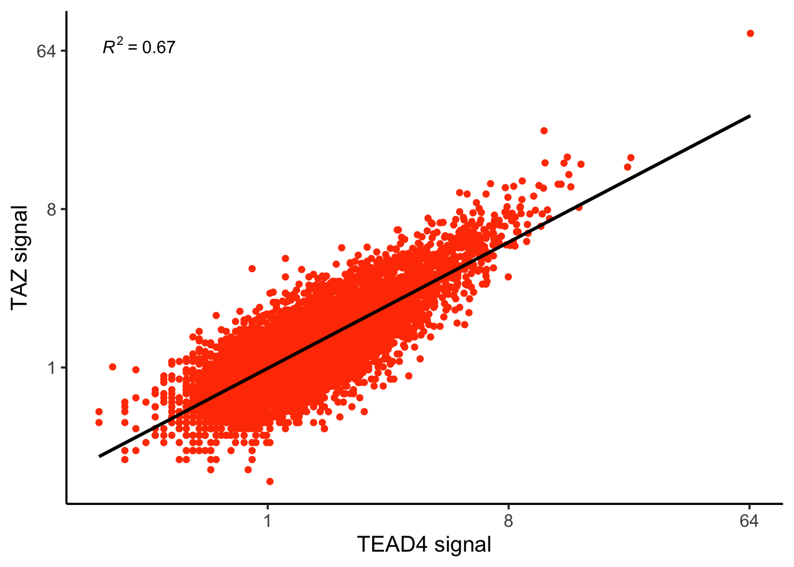
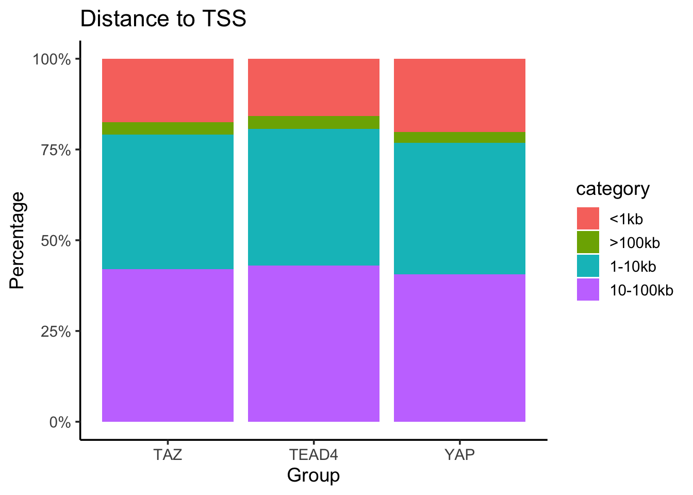
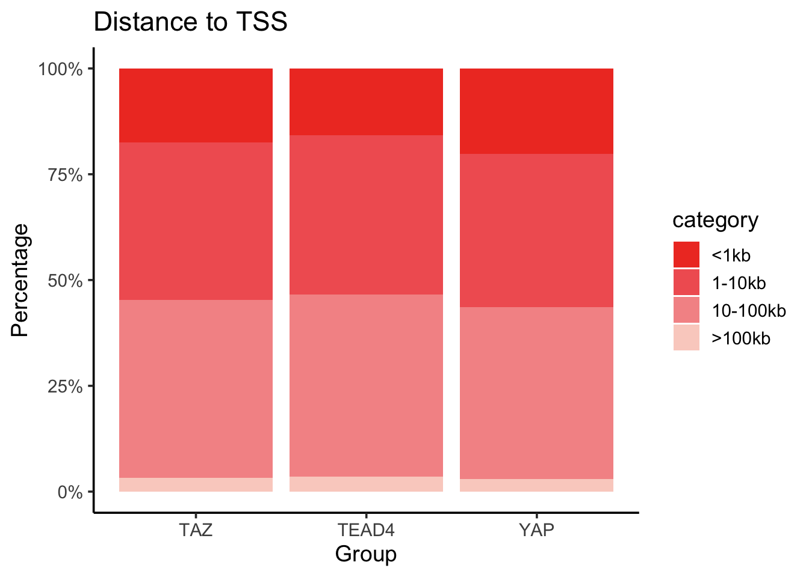

Last updated: 2025-01-04
Checks: 6 1
Knit directory:
reproduce_genomics_paper_figures/
This reproducible R Markdown analysis was created with workflowr (version 1.7.1). The Checks tab describes the reproducibility checks that were applied when the results were created. The Past versions tab lists the development history.
The R Markdown file has unstaged changes. To know which version of
the R Markdown file created these results, you’ll want to first commit
it to the Git repo. If you’re still working on the analysis, you can
ignore this warning. When you’re finished, you can run
wflow_publish to commit the R Markdown file and build the
HTML.
Great job! The global environment was empty. Objects defined in the global environment can affect the analysis in your R Markdown file in unknown ways. For reproduciblity it’s best to always run the code in an empty environment.
The command set.seed(20241226) was run prior to running
the code in the R Markdown file. Setting a seed ensures that any results
that rely on randomness, e.g. subsampling or permutations, are
reproducible.
Great job! Recording the operating system, R version, and package versions is critical for reproducibility.
Nice! There were no cached chunks for this analysis, so you can be confident that you successfully produced the results during this run.
Great job! Using relative paths to the files within your workflowr project makes it easier to run your code on other machines.
Great! You are using Git for version control. Tracking code development and connecting the code version to the results is critical for reproducibility.
The results in this page were generated with repository version 883cb56. See the Past versions tab to see a history of the changes made to the R Markdown and HTML files.
Note that you need to be careful to ensure that all relevant files for
the analysis have been committed to Git prior to generating the results
(you can use wflow_publish or
wflow_git_commit). workflowr only checks the R Markdown
file, but you know if there are other scripts or data files that it
depends on. Below is the status of the Git repository when the results
were generated:
Ignored files:
Ignored: .DS_Store
Ignored: .Rproj.user/
Ignored: analysis/.DS_Store
Ignored: data/fastq/
Ignored: data/public_data/
Ignored: data/reference/
Unstaged changes:
Modified: .gitignore
Modified: analysis/01_download_fastq_from_GEO.Rmd
Modified: analysis/02_align_to_hg38.Rmd
Modified: analysis/03_generate_bigwig.Rmd
Modified: analysis/04_figure1_a_b_c.Rmd
Modified: analysis/05_figure1_d_f.Rmd
Modified: analysis/08_homework.Rmd
Modified: analysis/_site.yml
Modified: analysis/about.Rmd
Note that any generated files, e.g. HTML, png, CSS, etc., are not included in this status report because it is ok for generated content to have uncommitted changes.
These are the previous versions of the repository in which changes were
made to the R Markdown (analysis/05_figure1_d_f.Rmd) and
HTML (docs/05_figure1_d_f.html) files. If you’ve configured
a remote Git repository (see ?wflow_git_remote), click on
the hyperlinks in the table below to view the files as they were in that
past version.
| File | Version | Author | Date | Message |
|---|---|---|---|---|
| Rmd | c9a4ca2 | crazyhottommy | 2024-12-31 | version 0.1 |
| html | c9a4ca2 | crazyhottommy | 2024-12-31 | version 0.1 |
Now, let’s re-create figure 1 d and f.

Look at figure 1d, it is a scatter plot. what do we need?
From the figure description:
- Linear correlation between the signal of YAP or TAZ and TEAD4 peaks in the 5522 shared binding sites. r2 is the coefficients of determination of the two correlations.
Read in the peak files:
library(GenomicRanges)
library(rtracklayer) # for reading in bed file
library(here)
library(dplyr)
library(ggplot2)
TAZ_peaks<- import(here("data/fastq/TAZ_peak/TAZ_peaks.narrowPeak"))
YAP_peaks<- import(here("data/fastq/YAP_peak/YAP_peaks.narrowPeak"))
TEAD4_peak<- import(here("data/fastq/TEAD4_peak/TEAD4_peaks.narrowPeak"))
YAP_overlap_TAZ_peaks<- subsetByOverlaps(YAP_peaks, TAZ_peaks)
YAP_overlap_TAZ_peaks_overlap_TEAD4<- subsetByOverlaps(YAP_overlap_TAZ_peaks, TEAD4_peak)
YAP_overlap_TAZ_peaks_overlap_TEAD4#> GRanges object with 5965 ranges and 6 metadata columns:
#> seqnames ranges strand | name score
#> <Rle> <IRanges> <Rle> | <character> <numeric>
#> [1] chr1 1024628-1025059 * | YAP_peak_3 494
#> [2] chr1 1264837-1265155 * | YAP_peak_4 148
#> [3] chr1 1265320-1265695 * | YAP_peak_5 131
#> [4] chr1 1360618-1360955 * | YAP_peak_6 306
#> [5] chr1 1659298-1659586 * | YAP_peak_8 45
#> ... ... ... ... . ... ...
#> [5961] chrX 154368850-154369243 * | YAP_peak_9801 90
#> [5962] chrX 154596614-154596846 * | YAP_peak_9802 120
#> [5963] chrX 154600351-154600918 * | YAP_peak_9803 131
#> [5964] chrX 154732680-154732891 * | YAP_peak_9804 58
#> [5965] chrX 155888248-155888487 * | YAP_peak_9806 108
#> signalValue pValue qValue peak
#> <numeric> <numeric> <numeric> <integer>
#> [1] 16.37320 54.3883 49.46070 192
#> [2] 8.81841 18.8472 14.89750 188
#> [3] 8.62413 17.0083 13.14010 112
#> [4] 14.37360 35.1297 30.64260 148
#> [5] 5.06808 7.8940 4.58709 102
#> ... ... ... ... ...
#> [5961] 6.13997 12.64820 9.00333 237
#> [5962] 8.21346 15.84150 12.02720 128
#> [5963] 8.62413 17.00830 13.14010 417
#> [5964] 5.74942 9.32421 5.89513 78
#> [5965] 6.72473 14.58900 10.84320 151
#> -------
#> seqinfo: 27 sequences from an unspecified genome; no seqlengths# use rtracklayer to write the GenomicRanges object to file
export(YAP_overlap_TAZ_peaks_overlap_TEAD4,
con = here("data/fastq/YAP_TAZ_TEAD4_common.bed"))The next step is to get the ‘signal’ in those common peaks for YAP, TAZ and TEAD4, respectively. How do we do it?
The signal is the number of reads fall/mapped into those peaks/regions. and normalized to total number of reads (library size) for each experiment.
There are multiple ways to do it.
The mutlicov
subcommand from bedtools is what we need.
bedtools multicov, reports the count of alignments from multiple position-sorted and indexed BAM files that overlap intervals in a BED file. Specifically, for each BED interval provided, it reports a separate count of overlapping alignments from each BAM file.
cd data/fastq
bedtools multicov -bams YAP.sorted.bam TAZ.sorted.bam TEAD4.sorted.bam -bed YAP_TAZ_TEAD4_common.bed > YAP_TAZ_TEAD4_counts.tsvIt takes less than a minute to finish. Let’s take a look at the file
head YAP_TAZ_TEAD4_counts.tsv
chr1 1024627 1025059 YAP_peak_3 494 . 88 72 82
chr1 1264836 1265155 YAP_peak_4 148 . 32 37 88
chr1 1265319 1265695 YAP_peak_5 131 . 29 31 26
chr1 1360617 1360955 YAP_peak_6 306 . 46 52 88
chr1 1659297 1659586 YAP_peak_8 45 . 15 14 20
chr1 2061242 2061682 YAP_peak_10 356 . 54 65 60
chr1 2140001 2140346 YAP_peak_11 86 . 27 18 27
chr1 3543323 3543624 YAP_peak_12 155 . 24 30 28
chr1 6724590 6724868 YAP_peak_14 251 . 38 42 90
chr1 8061325 8061624 YAP_peak_17 62 . 21 34 38The last three columns are counts for YAP1, TAZ and TEAD4 in the common regions.
We need to normalize it to total number of reads in each library.
Let’s use samtools flagstat:
samtools flagstat YAP.sorted.bam
24549590 + 0 in total (QC-passed reads + QC-failed reads)
24549590 + 0 primary
0 + 0 secondary
0 + 0 supplementary
0 + 0 duplicates
0 + 0 primary duplicates
23653961 + 0 mapped (96.35% : N/A)
23653961 + 0 primary mapped (96.35% : N/A)
0 + 0 paired in sequencing
0 + 0 read1
0 + 0 read2
0 + 0 properly paired (N/A : N/A)
0 + 0 with itself and mate mapped
0 + 0 singletons (N/A : N/A)
0 + 0 with mate mapped to a different chr
0 + 0 with mate mapped to a different chr (mapQ>=5)
samtools flagstat TAZ.sorted.bam
27521260 + 0 in total (QC-passed reads + QC-failed reads)
27521260 + 0 primary
0 + 0 secondary
0 + 0 supplementary
0 + 0 duplicates
0 + 0 primary duplicates
26789648 + 0 mapped (97.34% : N/A)
26789648 + 0 primary mapped (97.34% : N/A)
0 + 0 paired in sequencing
0 + 0 read1
0 + 0 read2
0 + 0 properly paired (N/A : N/A)
0 + 0 with itself and mate mapped
0 + 0 singletons (N/A : N/A)
0 + 0 with mate mapped to a different chr
0 + 0 with mate mapped to a different chr (mapQ>=5)
samtools flagstat TEAD4.sorted.bam
34776462 + 0 in total (QC-passed reads + QC-failed reads)
34776462 + 0 primary
0 + 0 secondary
0 + 0 supplementary
0 + 0 duplicates
0 + 0 primary duplicates
34332907 + 0 mapped (98.72% : N/A)
34332907 + 0 primary mapped (98.72% : N/A)
0 + 0 paired in sequencing
0 + 0 read1
0 + 0 read2
0 + 0 properly paired (N/A : N/A)
0 + 0 with itself and mate mapped
0 + 0 singletons (N/A : N/A)
0 + 0 with mate mapped to a different chr
0 + 0 with mate mapped to a different chr (mapQ>=5)
So the total number of priamry mapped reads are:
23653961, 26789648 and 34332907
for YAP, TAZ and TEAD4, respectively.
Load the data into R:
library(readr)
counts<- read_tsv(here("data/fastq/YAP_TAZ_TEAD4_counts.tsv"), col_names = FALSE)
colnames(counts)<- c("chr", "start", "end", "name", "score", "value", "YAP1", "TAZ", "TEAD4")
head(counts)#> # A tibble: 6 × 9
#> chr start end name score value YAP1 TAZ TEAD4
#> <chr> <dbl> <dbl> <chr> <dbl> <chr> <dbl> <dbl> <dbl>
#> 1 chr1 1024627 1025059 YAP_peak_3 494 . 88 72 82
#> 2 chr1 1264836 1265155 YAP_peak_4 148 . 32 37 88
#> 3 chr1 1265319 1265695 YAP_peak_5 131 . 29 31 26
#> 4 chr1 1360617 1360955 YAP_peak_6 306 . 46 52 88
#> 5 chr1 1659297 1659586 YAP_peak_8 45 . 15 14 20
#> 6 chr1 2061242 2061682 YAP_peak_10 356 . 54 65 60normalize the counts to CPM (counts per million).
counts<- counts %>%
mutate(YAP1 = YAP1/23653961 * 10^6,
TAZ = TAZ/26789648 * 10^6,
TEAD4 = TEAD4/34332907 * 10^6)
head(counts)#> # A tibble: 6 × 9
#> chr start end name score value YAP1 TAZ TEAD4
#> <chr> <dbl> <dbl> <chr> <dbl> <chr> <dbl> <dbl> <dbl>
#> 1 chr1 1024627 1025059 YAP_peak_3 494 . 3.72 2.69 2.39
#> 2 chr1 1264836 1265155 YAP_peak_4 148 . 1.35 1.38 2.56
#> 3 chr1 1265319 1265695 YAP_peak_5 131 . 1.23 1.16 0.757
#> 4 chr1 1360617 1360955 YAP_peak_6 306 . 1.94 1.94 2.56
#> 5 chr1 1659297 1659586 YAP_peak_8 45 . 0.634 0.523 0.583
#> 6 chr1 2061242 2061682 YAP_peak_10 356 . 2.28 2.43 1.75Now we are ready to plot!
ggplot(counts, aes(x=TEAD4, y= YAP1)) +
geom_point()
| Version | Author | Date |
|---|---|---|
| c9a4ca2 | crazyhottommy | 2024-12-31 |
There is an outlier with strong signal (note, check it on IGV to see if it is real, it could be a black-listed region with strong signal)
counts %>%
filter(TEAD4 > 60)#> # A tibble: 1 × 9
#> chr start end name score value YAP1 TAZ TEAD4
#> <chr> <dbl> <dbl> <chr> <dbl> <chr> <dbl> <dbl> <dbl>
#> 1 chr14 61754882 61755803 YAP_peak_3030 4298 . 82.6 80.3 64.5It looks real on IGV and I checked it is not in one of the blacklisted regions.

Note: Download the blacklisted regions from here: https://github.com/Boyle-Lab/Blacklist/blob/master/lists/hg38-blacklist.v2.bed.gz
We can remove that outlier, or use log2 scale
ggplot(counts, aes(x=TEAD4, y= YAP1)) +
geom_point(color = "#ff4000") +
scale_x_continuous(trans = 'log2') +
scale_y_continuous(trans = 'log2') +
theme_classic(base_size = 14) +
xlab("TEAD4 signal") +
ylab("YAP1 signal")
| Version | Author | Date |
|---|---|---|
| c9a4ca2 | crazyhottommy | 2024-12-31 |
We will use ggpmisc to add
the R^2.
library(ggpmisc)
ggplot(counts, aes(x=TEAD4, y= YAP1)) +
geom_point(color = "#ff4000") +
geom_smooth(method = "lm", se = FALSE, color = "black") + # Linear regression line
stat_poly_eq(
aes(label = ..rr.label..),
formula = y ~ x,
parse = TRUE,
color = "black"
) +
scale_x_continuous(trans = 'log2') +
scale_y_continuous(trans = 'log2') +
theme_classic(base_size = 14) +
xlab("TEAD4 signal") +
ylab("YAP1 signal")
| Version | Author | Date |
|---|---|---|
| c9a4ca2 | crazyhottommy | 2024-12-31 |
correlation coefficent is the r which ranges from -1 to 1. Coefficient of Determination is the R^2.
correlation_coefficent<- cor(log2(counts$TEAD4), log2(counts$YAP1))
correlation_coefficent#> [1] 0.8095894R_squared<- correlation_coefficent^2
R_squared#> [1] 0.655435We can re-create the other scatter plot easily:
ggplot(counts, aes(x=TEAD4, y= TAZ)) +
geom_point(color = "#ff4000") +
geom_smooth(method = "lm", se = FALSE, color = "black") + # Linear regression line
stat_poly_eq(
aes(label = ..rr.label..),
formula = y ~ x,
parse = TRUE,
color = "black"
) +
scale_x_continuous(trans = 'log2') +
scale_y_continuous(trans = 'log2') +
theme_classic(base_size = 14) +
xlab("TEAD4 signal") +
ylab("TAZ signal")
| Version | Author | Date |
|---|---|---|
| c9a4ca2 | crazyhottommy | 2024-12-31 |
Tip: take a look at ggpubr
- Absolute distance of YAP peaks (n=7709), TAZ peaks (n=9798), TEAD4 peaks (n=8406) or overlapping YAP/TAZ/TEAD peaks (n=5522) to the nearest TSS.
Figure 1f is a stacked bar plot. It shows the proportion of the peaks grouped by their distance to the closest TSS (transcription start site).
I will show you how to do this from scratch:
# BiocManager::install("TxDb.Hsapiens.UCSC.hg38.knownGene")
library(TxDb.Hsapiens.UCSC.hg38.knownGene)
library(GenomicRanges)
library(GenomicFeatures)
# Get the TSS
hg38_transcripts <- transcripts(TxDb.Hsapiens.UCSC.hg38.knownGene)
# get the TSS.
tss_gr <- promoters(hg38_transcripts, upstream=0, downstream=1)# Calculate the distance to the nearest TSS
distance_to_tss <- distanceToNearest(YAP_peaks, tss_gr)
# Print the distance
distance_to_tss#> Hits object with 9806 hits and 1 metadata column:
#> queryHits subjectHits | distance
#> <integer> <integer> | <integer>
#> [1] 1 1 | 1544
#> [2] 2 12 | 1890
#> [3] 3 143 | 4504
#> [4] 4 11811 | 1267
#> [5] 5 11811 | 1750
#> ... ... ... . ...
#> [9802] 9803 247714 | 4939
#> [9803] 9804 251718 | 18165
#> [9804] 9805 251730 | 2477
#> [9805] 9806 247793 | 6869
#> [9806] 9807 251784 | 2402
#> -------
#> queryLength: 9807 / subjectLength: 276905It is a Hits object, and we can access the the
distance metadata column
mcols(distance_to_tss)#> DataFrame with 9806 rows and 1 column
#> distance
#> <integer>
#> 1 1544
#> 2 1890
#> 3 4504
#> 4 1267
#> 5 1750
#> ... ...
#> 9802 4939
#> 9803 18165
#> 9804 2477
#> 9805 6869
#> 9806 2402head(mcols(distance_to_tss)$distance)#> [1] 1544 1890 4504 1267 1750 821Let’s do that for all three factors:
YAP_dist<- mcols(distanceToNearest(YAP_peaks, tss_gr))$distance
TAZ_dist<- mcols(distanceToNearest(TAZ_peaks, tss_gr))$distance
TEAD4_dist<- mcols(distanceToNearest(TEAD4_peak, tss_gr))$distanceput them in a single dataframe
tss_distance_df<- bind_rows(data.frame(factor = "YAP", distance = YAP_dist),
data.frame(factor = "TAZ", distance = TAZ_dist),
data.frame(factor = "TEAD4", distance = TEAD4_dist))
head(tss_distance_df)#> factor distance
#> 1 YAP 1544
#> 2 YAP 1890
#> 3 YAP 4504
#> 4 YAP 1267
#> 5 YAP 1750
#> 6 YAP 821tss_distance_df %>%
mutate(category = case_when(
distance < 1000 ~ "<1kb",
distance >=1000 & distance < 10000 ~ "1-10kb",
distance >= 10000 & distance <=100000 ~ "10-100kb",
distance > 100000 ~ "100kb"
)) %>%
head()#> factor distance category
#> 1 YAP 1544 1-10kb
#> 2 YAP 1890 1-10kb
#> 3 YAP 4504 1-10kb
#> 4 YAP 1267 1-10kb
#> 5 YAP 1750 1-10kb
#> 6 YAP 821 <1kbYou can see how I build the pipe %>% step by
step.
counts_per_category<- tss_distance_df %>%
mutate(category = case_when(
distance < 1000 ~ "<1kb",
distance >=1000 & distance < 10000 ~ "1-10kb",
distance >= 10000 & distance <=100000 ~ "10-100kb",
distance > 100000 ~ ">100kb"
)) %>%
group_by(factor, category) %>%
count()
counts_per_category#> # A tibble: 12 × 3
#> # Groups: factor, category [12]
#> factor category n
#> <chr> <chr> <int>
#> 1 TAZ 1-10kb 3985
#> 2 TAZ 10-100kb 4499
#> 3 TAZ <1kb 1879
#> 4 TAZ >100kb 355
#> 5 TEAD4 1-10kb 4331
#> 6 TEAD4 10-100kb 4955
#> 7 TEAD4 <1kb 1817
#> 8 TEAD4 >100kb 409
#> 9 YAP 1-10kb 3547
#> 10 YAP 10-100kb 3983
#> 11 YAP <1kb 1983
#> 12 YAP >100kb 293total_counts<- tss_distance_df %>%
mutate(category = case_when(
distance < 1000 ~ "<1kb",
distance >=1000 & distance < 10000 ~ "1-10kb",
distance >= 10000 & distance <=100000 ~ "10-100kb",
distance > 100000 ~ ">100kb"
)) %>%
count(factor, name = "total")
total_counts#> factor total
#> 1 TAZ 10718
#> 2 TEAD4 11512
#> 3 YAP 9806merged_df<- left_join(counts_per_category, total_counts)
merged_df %>%
mutate(Percentage = n/total * 100) %>%
ggplot(aes(x= factor, y = Percentage, fill = category)) +
geom_bar(stat = "identity", position = "stack") +
labs(
title = "Distance to TSS",
x = "Group",
y = "Percentage"
) +
scale_y_continuous(labels = scales::percent_format(scale = 1)) +
theme_classic(base_size = 14)
| Version | Author | Date |
|---|---|---|
| c9a4ca2 | crazyhottommy | 2024-12-31 |
You can customize the color and reorder the category as you want.
merged_df$category<- factor(merged_df$category,
levels = c("<1kb", "1-10kb", "10-100kb", ">100kb"))
merged_df %>%
mutate(Percentage = n/total * 100) %>%
ggplot(aes(x= factor, y = Percentage, fill = category)) +
geom_bar(stat = "identity", position = "stack") +
labs(
title = "Distance to TSS",
x = "Group",
y = "Percentage"
) +
scale_y_continuous(labels = scales::percent_format(scale = 1)) +
scale_fill_manual(values = c("#EF3E2B", "#F16161", "#F59595", "#FAD1C8")) +
theme_classic(base_size = 14)
| Version | Author | Date |
|---|---|---|
| c9a4ca2 | crazyhottommy | 2024-12-31 |
The orginal figure shows a big proportion of peaks > 100kb. This is a little surprising to me.
of course, you can also use packages such as
ChIPseeker.
sessionInfo()#> R version 4.4.1 (2024-06-14)
#> Platform: aarch64-apple-darwin20
#> Running under: macOS Sonoma 14.1
#>
#> Matrix products: default
#> BLAS: /Library/Frameworks/R.framework/Versions/4.4-arm64/Resources/lib/libRblas.0.dylib
#> LAPACK: /Library/Frameworks/R.framework/Versions/4.4-arm64/Resources/lib/libRlapack.dylib; LAPACK version 3.12.0
#>
#> locale:
#> [1] en_US.UTF-8/en_US.UTF-8/en_US.UTF-8/C/en_US.UTF-8/en_US.UTF-8
#>
#> time zone: America/New_York
#> tzcode source: internal
#>
#> attached base packages:
#> [1] stats4 stats graphics grDevices utils datasets methods
#> [8] base
#>
#> other attached packages:
#> [1] TxDb.Hsapiens.UCSC.hg38.knownGene_3.18.0
#> [2] GenomicFeatures_1.56.0
#> [3] AnnotationDbi_1.66.0
#> [4] Biobase_2.64.0
#> [5] ggpmisc_0.6.1
#> [6] ggpp_0.5.8-1
#> [7] readr_2.1.5
#> [8] ggplot2_3.5.1
#> [9] dplyr_1.1.4
#> [10] here_1.0.1
#> [11] rtracklayer_1.64.0
#> [12] GenomicRanges_1.56.1
#> [13] GenomeInfoDb_1.40.1
#> [14] IRanges_2.38.1
#> [15] S4Vectors_0.42.1
#> [16] BiocGenerics_0.50.0
#> [17] workflowr_1.7.1
#>
#> loaded via a namespace (and not attached):
#> [1] DBI_1.2.3 bitops_1.0-8
#> [3] polynom_1.4-1 rlang_1.1.4
#> [5] magrittr_2.0.3 git2r_0.35.0
#> [7] RSQLite_2.3.7 matrixStats_1.3.0
#> [9] compiler_4.4.1 mgcv_1.9-1
#> [11] getPass_0.2-4 png_0.1-8
#> [13] callr_3.7.6 vctrs_0.6.5
#> [15] quantreg_5.99.1 stringr_1.5.1
#> [17] pkgconfig_2.0.3 crayon_1.5.3
#> [19] fastmap_1.2.0 XVector_0.44.0
#> [21] labeling_0.4.3 utf8_1.2.4
#> [23] Rsamtools_2.20.0 promises_1.3.0
#> [25] rmarkdown_2.27 tzdb_0.4.0
#> [27] UCSC.utils_1.0.0 ps_1.7.7
#> [29] MatrixModels_0.5-3 bit_4.0.5
#> [31] xfun_0.46 zlibbioc_1.50.0
#> [33] cachem_1.1.0 jsonlite_1.8.8
#> [35] blob_1.2.4 highr_0.11
#> [37] later_1.3.2 DelayedArray_0.30.1
#> [39] BiocParallel_1.38.0 parallel_4.4.1
#> [41] R6_2.5.1 bslib_0.8.0
#> [43] stringi_1.8.4 jquerylib_0.1.4
#> [45] Rcpp_1.0.13 SummarizedExperiment_1.34.0
#> [47] knitr_1.48 httpuv_1.6.15
#> [49] Matrix_1.7-0 splines_4.4.1
#> [51] tidyselect_1.2.1 rstudioapi_0.16.0
#> [53] abind_1.4-5 yaml_2.3.10
#> [55] codetools_0.2-20 curl_5.2.1
#> [57] processx_3.8.4 lattice_0.22-6
#> [59] tibble_3.2.1 KEGGREST_1.44.1
#> [61] withr_3.0.0 evaluate_0.24.0
#> [63] survival_3.6-4 Biostrings_2.72.1
#> [65] confintr_1.0.2 pillar_1.9.0
#> [67] MatrixGenerics_1.16.0 whisker_0.4.1
#> [69] generics_0.1.3 vroom_1.6.5
#> [71] rprojroot_2.0.4 RCurl_1.98-1.16
#> [73] hms_1.1.3 munsell_0.5.1
#> [75] scales_1.3.0 glue_1.7.0
#> [77] tools_4.4.1 BiocIO_1.14.0
#> [79] SparseM_1.84-2 GenomicAlignments_1.40.0
#> [81] fs_1.6.4 XML_3.99-0.17
#> [83] grid_4.4.1 colorspace_2.1-1
#> [85] nlme_3.1-164 GenomeInfoDbData_1.2.12
#> [87] restfulr_0.0.15 cli_3.6.3
#> [89] fansi_1.0.6 S4Arrays_1.4.1
#> [91] gtable_0.3.5 sass_0.4.9
#> [93] digest_0.6.36 SparseArray_1.4.8
#> [95] rjson_0.2.22 farver_2.1.2
#> [97] memoise_2.0.1 htmltools_0.5.8.1
#> [99] lifecycle_1.0.4 httr_1.4.7
#> [101] bit64_4.0.5 MASS_7.3-60.2